18. 概率分布#
18.1. 概述#
在数据科学应用中，我们经常关注某个特定变量的数据。
在本讲中，我们将使用 Python 快速介绍概率分布。
本讲是三讲中的第一讲。
第二讲 观测分布 讨论观测数据——即我们测量或收集的一组数字——以及它与本讲所研究的概率分布之间的联系。
第三讲 为数据拟合分布 探讨哪个概率分布最适合描述给定的数据集这一问题。
import matplotlib.pyplot as plt
import matplotlib as mpl
import pandas as pd
import numpy as np
import scipy.stats
FONTPATH = "fonts/SourceHanSerifSC-SemiBold.otf"
mpl.font_manager.fontManager.addfont(FONTPATH)
plt.rcParams['font.family'] = ['Source Han Serif SC']
np.set_printoptions(legacy='1.25') # 以普通数字形式打印标量
为了引出下文，让我们从一个真实的例子开始：美国成年男性和女性的身高。
数据来自美国国家健康与营养检查调查（NHANES）。
下图展示了这两个数据集的直方图，身高以厘米为单位。
findfont: Failed to find font weight normal, now using 600.
{kind=link}
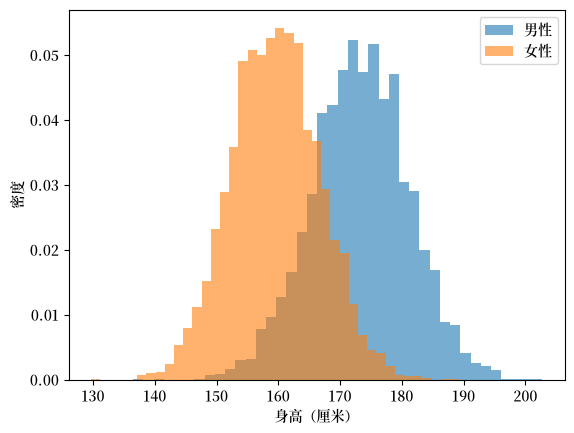
Fig. 18.1 美国成年人身高（NHANES）#
每个直方图都呈现出我们熟悉的”钟形”。
这表明我们可以用正态分布来近似这些数据——这是一种具有钟形密度的连续分布，我们将在下面详细研究它。
为此，我们对每个数据集拟合一个正态分布，选择其均值和标准差以匹配身高数据的样本均值和样本标准差。
{kind=link}
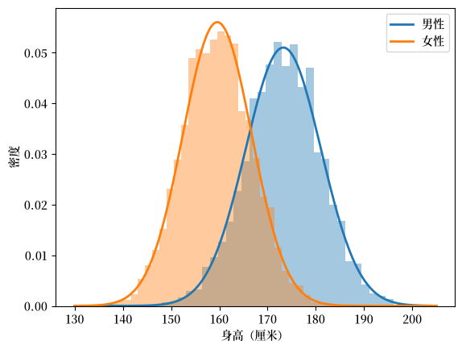
Fig. 18.2 正态分布拟合美国成年人身高#
拟合效果非常好。
请注意这实现了什么：每个包含约5,000个个体测量值的数据集，现在都可以用一个仅有两个参数的平滑密度函数来概括——均值 \(\mu\)（决定中心位置）和标准差 \(\sigma\)（决定离散程度）。
这样的紧凑摘要极其有用。
这也是我们研究常见分布的原因之一：这些是由少数几个参数控制的、已被证明对描述数据非常有用的一系列命名分布族。
现在让我们来研究这些分布，回顾一些著名分布的定义，并探索如何使用 SciPy 来处理它们。
18.2. 离散分布#
我们从离散分布开始。
离散分布由一组数值 \(S = \{x_1, \ldots, x_n\}\) 定义，并在 \(S\) 上有一个概率质量函数（PMF），它是一个从 \(S\) 到 \([0,1]\) 的函数 \(p\)，具有属性
例如，下图展示了2024年日本各年龄段人口（日本国籍）占总人口的比例，从0岁到100岁及以上。
数据来自日本统计局。
{kind=link}
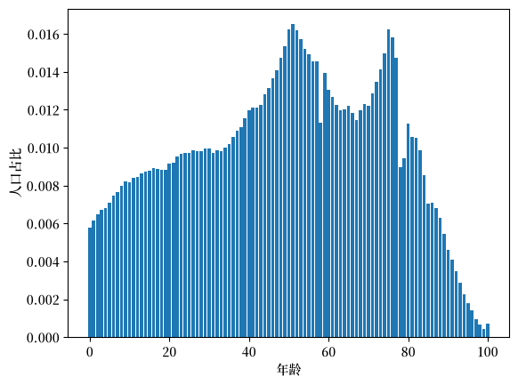
Fig. 18.3 各年龄段人口比例，日本2024年#
这里每个 \(x_i\) 是一个年龄，\(p(x_i)\) 是该年龄段人口占总人口的比例，所有比例之和为一。
我们说一个随机变量 \(X\) 服从分布 \(p\)，如果 \(X\) 取值为 \(x_i\) 的概率是 \(p(x_i)\)。
即，
具有分布 \(p\) 的随机变量 \(X\) 的均值或期望值是
期望值也被称为分布的一阶矩。
我们也将这个数字称为分布（由 \(p\) 表示）的均值。
更一般地，如果 \(f\) 是 \(S\) 上的一个函数，那么 \(f(X)\) 是一个随机变量，当 \(X\) 取值为 \(x_i\) 时，它取值为 \(f(x_i)\)。
它的期望值是将这些值分别以其概率加权求和得到的：
我们下面定义的每一个量，都是这种形式的期望值，只是选取了合适的 \(f\)。
\(X\) 的方差定义为
方差也称为分布的二阶中心矩。
\(X\) 的标准差是方差的平方根：
我们通常更偏好使用标准差而非方差，因为标准差与 \(X\) 本身的单位相同。
例如，如果 \(X\) 是以厘米为单位的身高，那么 \(\sigma\) 的单位是厘米，而方差的单位是平方厘米。
这意味着 \(\sigma\) 可以直接从数据直方图的横轴上读出，作为衡量离散程度的指标。
均值和方差是矩的特殊情形。
记 \(\mu = \mathbb{E}[X]\)，\(X\) 的第 \(k\) 阶矩是 \(\mathbb{E}[X^k]\)，而第 \(k\) 阶中心矩是 \(\mathbb{E}[(X - \mu)^k]\)。
因此均值是一阶矩，方差是二阶中心矩。
使用标准化矩通常更为方便：
当我们对 \(X\) 进行平移或缩放时，标准化矩保持不变。
（如果 \(X\) 以厘米为单位测量，那么转换为英寸后，我们得到的标准化矩是相同的。）
第三个标准化矩称为偏度：
偏度衡量的是不对称性。
任何关于其均值对称的分布，偏度都为零，而具有较长右尾的分布则具有正偏度。
第四个标准化矩称为峰度：
峰度衡量的是有多少概率质量分布在尾部远端。
对于所有正态分布，无论 \(\mu\) 和 \(\sigma\) 取何值，都有 \(K = 3\)。
由于正态分布是一个非常有用的基准，通常会将峰度减去3，得到超额峰度
对于正态分布而言，超额峰度为零。
正的超额峰度意味着尾部的概率质量比正态分布更多——极端值出现的可能性更大。
Note
在阅读软件文档时要小心，因为这两个名称并不总是被正确使用。
例如，scipy.stats.kurtosis 默认返回的是超额峰度，而不是峰度。
（设置 fisher=False 可以获得峰度。）
我们将在 观测分布 中使用偏度和超额峰度，来帮助判断给定的数据集是否呈现正态分布。
\(X\) 的累积分布函数（CDF）定义为
这里 \(\mathbb 1\{\text{判断语句} \} = 1\) 如果 “判断语句” 为真，否则为零。
因此第二项取所有 \(x_i \leq x\) 并求它们概率的和。
18.2.1. 均匀分布#
一个简单的例子是均匀分布，其中 \(p(x_i) = 1/n\) 对于所有 \(i\) 都成立。
我们可以像这样从 SciPy 中导入 \(S = \{1, \ldots, n\}\) 上的均匀分布：
n = 10
u = scipy.stats.randint(1, n+1)
计算均值和方差：
u.mean(), u.var()
(5.5, 8.25)
均值的公式是 \((n+1)/2\)，方差的公式是 \((n^2 - 1)/12\)。
现在让我们评估 PMF：
u.pmf(1)
0.1
u.pmf(2)
0.1
以下是 PMF 的图：
fig, ax = plt.subplots()
S = np.arange(1, n+1)
ax.plot(S, u.pmf(S), linestyle='', marker='o', alpha=0.8, ms=4)
ax.vlines(S, 0, u.pmf(S), lw=0.2)
ax.set_xticks(S)
ax.set_xlabel('S')
ax.set_ylabel('PMF')
plt.show()
{kind=link}
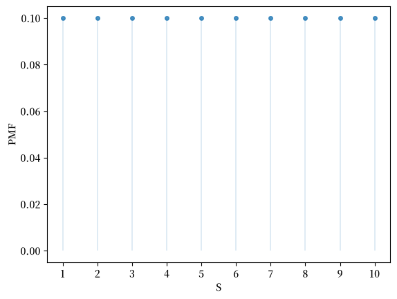
Fig. 18.4 均匀分布的 PMF#
这里是 CDF 的图：
fig, ax = plt.subplots()
S = np.arange(1, n+1)
ax.step(S, u.cdf(S))
ax.vlines(S, 0, u.cdf(S), lw=0.2)
ax.set_xticks(S)
ax.set_xlabel('S')
ax.set_ylabel('CDF')
plt.show()
{kind=link}
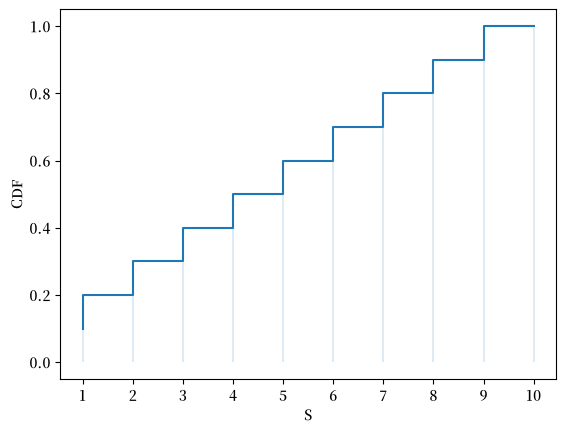
Fig. 18.5 均匀分布的 CDF#
CDF 在\(x_i\)处跳升\(p(x_i)\)。
Exercise 18.1
直接使用上面给出的表达式，从PMF出发计算此参数化情形（即\(n=10\)）下的均值和方差。
检查你的答案是否与u.mean()和u.var()一致。
18.2.2. 伯努利分布#
另一个有用的分布是 \(S = \{0,1\}\) 上的伯努利分布，其 PMF 是：
这里 \(\theta \in [0,1]\) 是一个参数。
我们可以将这个分布视为对一个成功概率为 \(\theta\) 的随机试验进行概率建模。
\(p(1) = \theta\) 表示试验成功（取值1）的概率是 \(\theta\)
\(p(0) = 1 - \theta\) 表示试验失败（取值0）的概率是 \(1-\theta\)
均值的公式是 \(\theta\)，方差的公式是 \(\theta(1-\theta)\)。
我们可以这样从 SciPy 导入 \(S = \{0,1\}\) 上的伯努利分布：
θ = 0.4
u = scipy.stats.bernoulli(θ)
这是 \(\theta=0.4\) 时的均值和方差：
u.mean(), u.var()
(0.4, 0.24)
我们可以评估 PMF 如下：
u.pmf(0), u.pmf(1)
(0.6, 0.4)
18.2.3. 二项分布#
另一个有用（而且更有趣）的分布是 \(S=\{0, \ldots, n\}\) 上的二项分布，其 PMF 为：
同样，\(\theta \in [0,1]\) 是一个参数。
\(p(i)\) 的含义是：在成功概率为 \(\theta\) 的 \(n\) 次独立试验中，出现 \(i\) 次成功的概率。
例如，如果 \(\theta=0.5\)，那么 \(p(i)\) 就是在 \(n\) 次抛掷一枚公平硬币中出现 \(i\) 次正面的概率。
均值的公式是 \(n \theta\)，方差的公式是 \(n \theta (1-\theta)\)。
让我们通过一个具体例子来说明这个分布
n = 10
θ = 0.5
u = scipy.stats.binom(n, θ)
根据我们的公式，均值和方差是
n * θ, n * θ * (1 - θ)
(5.0, 2.5)
让我们看看SciPy是否给出了相同的结果：
u.mean(), u.var()
(5.0, 2.5)
这是 PMF：
u.pmf(1)
0.009765625000000002
fig, ax = plt.subplots()
S = np.arange(1, n+1)
ax.plot(S, u.pmf(S), linestyle='', marker='o', alpha=0.8, ms=4)
ax.vlines(S, 0, u.pmf(S), lw=0.2)
ax.set_xticks(S)
ax.set_xlabel('S')
ax.set_ylabel('PMF')
plt.show()
{kind=link}
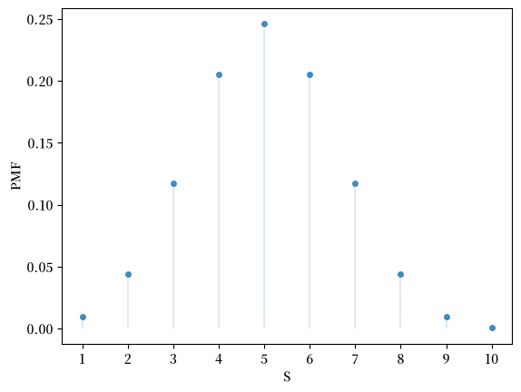
Fig. 18.6 二项分布的 PMF#
这是 CDF：
fig, ax = plt.subplots()
S = np.arange(1, n+1)
ax.step(S, u.cdf(S))
ax.vlines(S, 0, u.cdf(S), lw=0.2)
ax.set_xticks(S)
ax.set_xlabel('S')
ax.set_ylabel('CDF')
plt.show()
{kind=link}
Fig. 18.7 二项分布的 CDF#
Exercise 18.2
使用u.pmf，验证我们上面给出的CDF定义是否计算出与u.cdf相同的函数。
Solution to Exercise 18.2
以下是一种解法：
fig, ax = plt.subplots()
S = np.arange(1, n+1)
u_sum = np.cumsum(u.pmf(S))
ax.step(S, u_sum)
ax.vlines(S, 0, u_sum, lw=0.2)
ax.set_xticks(S)
ax.set_xlabel('S')
ax.set_ylabel('CDF')
plt.show()
{kind=link}
我们可以看到输出图与上面的相同。
18.2.4. 几何分布#
几何分布具有无限支持集 \(S = \{0, 1, 2, \ldots\}\)，其 PMF 为
其中 \(\theta \in [0,1]\) 是一个参数
（如果一个离散分布赋予正概率的点集是无限的，我们就说它具有无限支持。）
要理解这个分布，可以设想反复进行独立的随机试验，每次试验成功的概率都是 \(\theta\)。
\(p(i)\) 的含义是：在第一次成功之前恰好出现 \(i\) 次失败的概率。
可以证明，该分布的均值为 \(1/\theta\)，方差为 \((1-\theta)/\theta\)。
这里有一个例子。
θ = 0.1
u = scipy.stats.geom(θ)
u.mean(), u.var()
(10.0, 90.0)
这里是部分PMF：
fig, ax = plt.subplots()
n = 20
S = np.arange(n)
ax.plot(S, u.pmf(S), linestyle='', marker='o', alpha=0.8, ms=4)
ax.vlines(S, 0, u.pmf(S), lw=0.2)
ax.set_xticks(S)
ax.set_xlabel('S')
ax.set_ylabel('PMF')
plt.show()
{kind=link}
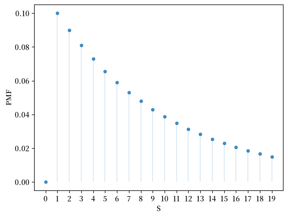
Fig. 18.8 几何分布的 PMF#
18.2.5. 泊松分布#
参数为 \(\lambda > 0\) 的 \(S = \{0, 1, \ldots\}\) 上的泊松分布，其 PMF 为
\(p(i)\) 的含义是：在一个固定时间区间内发生 \(i\) 次事件的概率，其中事件以恒定的速率 \(\lambda\) 独立发生。
可以证明，均值为 \(\lambda\)，方差也为 \(\lambda\)。
下面我们通过一个具体例子来展示泊松分布：
λ = 2
u = scipy.stats.poisson(λ)
u.mean(), u.var()
(2.0, 2.0)
这是概率质量函数：
u.pmf(1)
0.2706705664732254
fig, ax = plt.subplots()
S = np.arange(1, n+1)
ax.plot(S, u.pmf(S), linestyle='', marker='o', alpha=0.8, ms=4)
ax.vlines(S, 0, u.pmf(S), lw=0.2)
ax.set_xticks(S)
ax.set_xlabel('S')
ax.set_ylabel('PMF')
plt.show()
{kind=link}
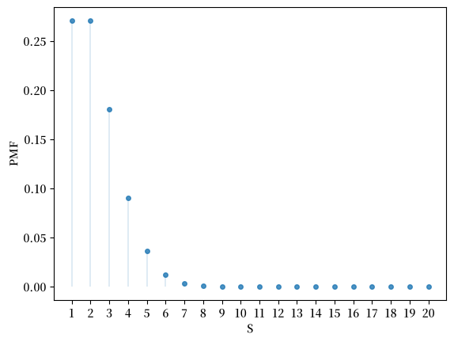
Fig. 18.9 泊松分布的 PMF#
18.3. 连续分布#
连续分布通过概率密度函数来描述，这是一个定义在实数集 \(\mathbb R\)（所有实数的集合）上的函数 \(p\)，对所有 \(x\) 满足 \(p(x) \geq 0\)，且
我们说随机变量 \(X\) 服从分布 \(p\)，如果
对所有 \(a \leq b\) 成立。
期望的定义与离散情形相同，只需将求和替换为积分。
例如，\(X\) 的均值是
而对于函数 \(f\)，
方差、标准差、矩、偏度和峰度的定义与之前完全相同。
\(X\) 的累积分布函数（CDF）定义为
对于我们下面研究的连续分布，\(F\) 是严格递增的，因此它存在反函数 \(F^{-1}\)，称为分位数函数。
给定 \(\tau \in (0,1)\)，值 \(q_\tau = F^{-1}(\tau)\) 称为该分布的第 \(\tau\) 分位数。
它是使得 \(X\) 以概率 \(\tau\) 落在其下方的点。
0.5 分位数称为中位数，它是衡量分布中心位置的另一种方法。
0.25 和 0.75 分位数分别称为第一和第三四分位数，它们之间的距离称为四分位距，是衡量离散程度的另一种方法。
这些替代指标之所以有用，是因为与均值和标准差不同，它们几乎不受少数极端值的影响。
（我们将在 重尾分布 中看到，这种稳健性对某些数据集而言非常重要。）
18.3.1. 正态分布#
也许最著名的分布是正态分布，其密度为
正态分布由两个参数决定：\(\mu \in \mathbb R\) 和 \(\sigma \in (0, \infty)\)。
通过微积分可以证明，对于该分布，均值为 \(\mu\)，方差为 \(\sigma^2\)。
我们可以通过 SciPy 来计算正态分布的矩、PDF 和 CDF：
μ, σ = 0.0, 1.0
u = scipy.stats.norm(μ, σ)
u.mean(), u.var()
(0.0, 1.0)
当我们要求矩 'sk' 时，stats 方法会返回偏度和超额峰度：
u.stats(moments='sk')
(0.0, 0.0)
正如预期的那样，两者都为零。
（偏度为零是因为密度关于 \(\mu\) 对称。）
以下是通过 ppf 方法（SciPy 中分位数函数的名称）获得的中位数和两个四分位数：
u.ppf(0.5), u.ppf(0.25), u.ppf(0.75)
(0.0, -0.6744897501960817, 0.6744897501960817)
由于密度是对称的，中位数等于均值。
下面是密度的图像——著名的”钟形曲线”：
μ_vals = [-1, 0, 1]
σ_vals = [0.4, 1, 1.6]
fig, ax = plt.subplots()
x_grid = np.linspace(-4, 4, 200)
for μ, σ in zip(μ_vals, σ_vals):
u = scipy.stats.norm(μ, σ)
ax.plot(x_grid, u.pdf(x_grid),
alpha=0.5, lw=2,
label=rf'$\mu={μ}, \sigma={σ}$')
ax.set_xlabel('x')
ax.set_ylabel('PDF')
plt.legend()
plt.show()
findfont: Failed to find font weight normal, now using 600.
{kind=link}
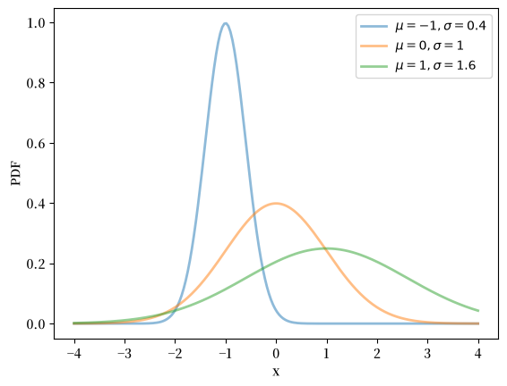
Fig. 18.10 正态分布的密度#
下面是 CDF 的图像：
fig, ax = plt.subplots()
for μ, σ in zip(μ_vals, σ_vals):
u = scipy.stats.norm(μ, σ)
ax.plot(x_grid, u.cdf(x_grid),
alpha=0.5, lw=2,
label=rf'$\mu={μ}, \sigma={σ}$')
ax.set_ylim(0, 1)
ax.set_xlabel('x')
ax.set_ylabel('CDF')
plt.legend()
plt.show()
{kind=link}
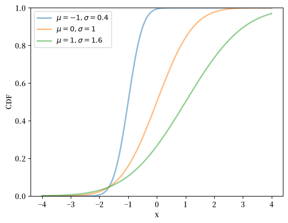
Fig. 18.11 正态分布的 CDF#
18.3.2. 对数正态分布#
对数正态分布是一个定义在 \(\left(0, \infty\right)\) 上的分布，其密度为
该分布有两个参数，\(\mu\) 和 \(\sigma\)。
可以证明，对于该分布，均值为 \(\exp\left(\mu + \sigma^2/2\right)\)，方差为 \(\left[\exp\left(\sigma^2\right) - 1\right] \exp\left(2\mu + \sigma^2\right)\)。
可以证明：
如果 \(X\) 服从对数正态分布，那么 \(\log X\) 服从正态分布，并且
如果 \(X\) 服从正态分布，那么 \(\exp X\) 服从对数正态分布。
我们可以按如下方式获得对数正态密度的矩、PDF 和 CDF：
μ, σ = 0.0, 1.0
u = scipy.stats.lognorm(s=σ, scale=np.exp(μ))
u.mean(), u.var()
(1.6487212707001282, 4.670774270471604)
在高阶矩方面，对数正态分布与正态分布形成了鲜明对比：
u.stats(moments='sk')
(6.184877138632554, 110.9363921763115)
偏度较大且为正，反映出较长的右尾，而超额峰度则极其巨大。
均值与中位数之间的差距也相应地很大：
u.mean(), u.ppf(0.5)
(1.6487212707001282, 1.0)
μ_vals = [-1, 0, 1]
σ_vals = [0.25, 0.5, 1]
x_grid = np.linspace(0, 3, 200)
fig, ax = plt.subplots()
for μ, σ in zip(μ_vals, σ_vals):
u = scipy.stats.lognorm(σ, scale=np.exp(μ))
ax.plot(x_grid, u.pdf(x_grid),
alpha=0.5, lw=2,
label=fr'$\mu={μ}, \sigma={σ}$')
ax.set_xlabel('x')
ax.set_ylabel('PDF')
plt.legend()
plt.show()
{kind=link}
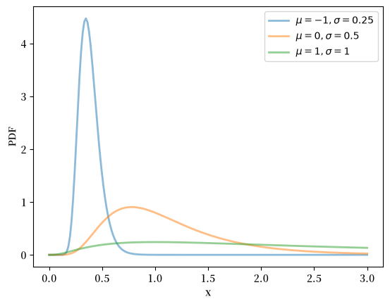
Fig. 18.12 对数正态分布的密度#
fig, ax = plt.subplots()
for μ, σ in zip(μ_vals, σ_vals):
u = scipy.stats.lognorm(σ, scale=np.exp(μ))
ax.plot(x_grid, u.cdf(x_grid),
alpha=0.5, lw=2,
label=rf'$\mu={μ}, \sigma={σ}$')
ax.set_ylim(0, 1)
ax.set_xlabel('x')
ax.set_ylabel('CDF')
plt.legend()
plt.show()
{kind=link}
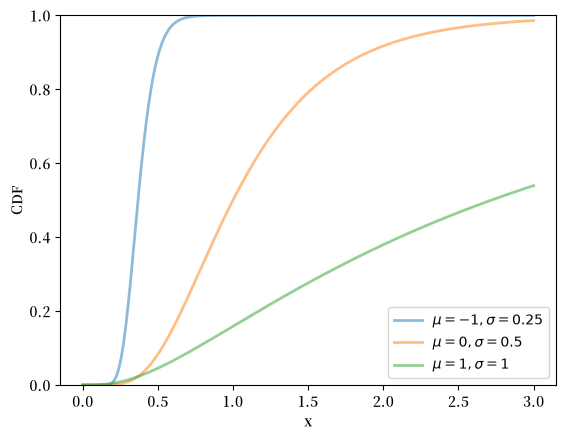
Fig. 18.13 对数正态分布的 CDF#
18.3.3. 指数分布#
指数分布是定义在 \(\left(0, \infty\right)\) 上的分布，其密度为
该分布有一个参数 \(\lambda\)。
指数分布可以看作是几何分布的连续对应形式。
可以证明，对于该分布，均值为 \(1/\lambda\)，方差为 \(1/\lambda^2\)。
我们可以按如下方式获得指数密度的矩、PDF 和 CDF：
λ = 1.0
u = scipy.stats.expon(scale=1/λ)
u.mean(), u.var()
(1.0, 1.0)
fig, ax = plt.subplots()
λ_vals = [0.5, 1, 2]
x_grid = np.linspace(0, 6, 200)
for λ in λ_vals:
u = scipy.stats.expon(scale=1/λ)
ax.plot(x_grid, u.pdf(x_grid),
alpha=0.5, lw=2,
label=rf'$\lambda={λ}$')
ax.set_xlabel('x')
ax.set_ylabel('PDF')
plt.legend()
plt.show()
{kind=link}
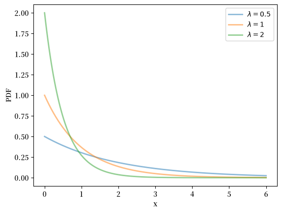
Fig. 18.14 指数分布的密度#
fig, ax = plt.subplots()
for λ in λ_vals:
u = scipy.stats.expon(scale=1/λ)
ax.plot(x_grid, u.cdf(x_grid),
alpha=0.5, lw=2,
label=rf'$\lambda={λ}$')
ax.set_ylim(0, 1)
ax.set_xlabel('x')
ax.set_ylabel('CDF')
plt.legend()
plt.show()
{kind=link}
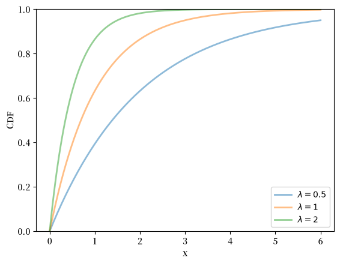
Fig. 18.15 指数分布的 CDF#
18.3.4. 贝塔分布#
贝塔分布是定义在 \((0, 1)\) 上的分布，其密度为
其中 \(\Gamma\) 是伽马函数。
(伽马函数的作用是使密度标准化，从而使其积分为一。)
此分布有两个参数，\(\alpha > 0\) 和 \(\beta > 0\)。
可以证明对于该分布，均值为 \(\alpha / (\alpha + \beta)\)，方差为 \(\alpha \beta / (\alpha + \beta)^2 (\alpha + \beta + 1)\)。
我们可以如下获得贝塔密度的矩、PDF 和 CDF：
α, β = 3.0, 1.0
u = scipy.stats.beta(α, β)
u.mean(), u.var()
(0.75, 0.0375)
α_vals = [0.5, 1, 5, 25, 3]
β_vals = [3, 1, 10, 20, 0.5]
x_grid = np.linspace(0, 1, 200)
fig, ax = plt.subplots()
for α, β in zip(α_vals, β_vals):
u = scipy.stats.beta(α, β)
ax.plot(x_grid, u.pdf(x_grid),
alpha=0.5, lw=2,
label=rf'$\alpha={α}, \beta={β}$')
ax.set_xlabel('x')
ax.set_ylabel('PDF')
plt.legend()
plt.show()
{kind=link}
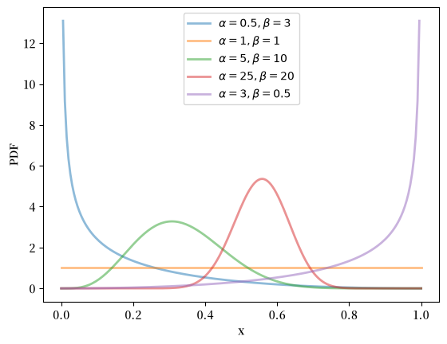
Fig. 18.16 贝塔分布的密度#
fig, ax = plt.subplots()
for α, β in zip(α_vals, β_vals):
u = scipy.stats.beta(α, β)
ax.plot(x_grid, u.cdf(x_grid),
alpha=0.5, lw=2,
label=rf'$\alpha={α}, \beta={β}$')
ax.set_ylim(0, 1)
ax.set_xlabel('x')
ax.set_ylabel('CDF')
plt.legend()
plt.show()
{kind=link}
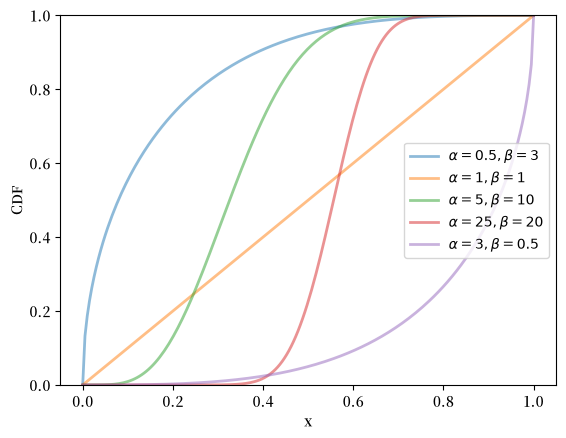
Fig. 18.17 贝塔分布的 CDF#
18.3.5. 伽马分布#
伽马分布是一种在 \(\left(0, \infty\right)\) 上的分布，其密度为
此分布有两个参数，\(\alpha > 0\) 和 \(\beta > 0\)。
可以证明，对于该分布，均值为 \(\alpha / \beta\)，方差为 \(\alpha / \beta^2\)。
一种解释是：如果 \(X\) 服从伽马分布，且 \(\alpha\) 是整数，那么 \(X\) 就是 \(\alpha\) 个独立的、均值为 \(1/\beta\) 的指数分布随机变量之和。
下面我们来计算伽马分布的矩、PDF 和 CDF：
α, β = 3.0, 2.0
u = scipy.stats.gamma(α, scale=1/β)
u.mean(), u.var()
(1.5, 0.75)
α_vals = [1, 3, 5, 10]
β_vals = [3, 5, 3, 3]
x_grid = np.linspace(0, 7, 200)
fig, ax = plt.subplots()
for α, β in zip(α_vals, β_vals):
u = scipy.stats.gamma(α, scale=1/β)
ax.plot(x_grid, u.pdf(x_grid),
alpha=0.5, lw=2,
label=rf'$\alpha={α}, \beta={β}$')
ax.set_xlabel('x')
ax.set_ylabel('PDF')
plt.legend()
plt.show()
{kind=link}
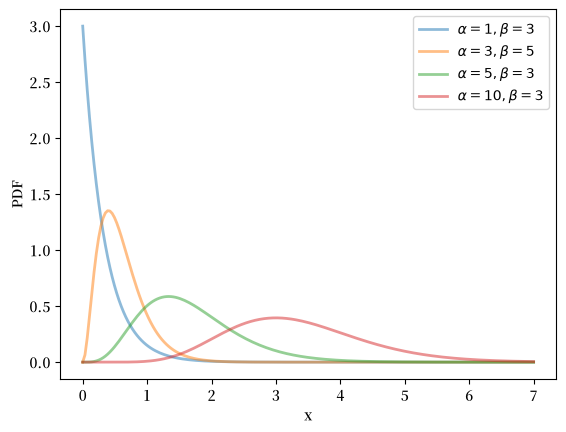
Fig. 18.18 伽马分布的密度#
fig, ax = plt.subplots()
for α, β in zip(α_vals, β_vals):
u = scipy.stats.gamma(α, scale=1/β)
ax.plot(x_grid, u.cdf(x_grid),
alpha=0.5, lw=2,
label=rf'$\alpha={α}, \beta={β}$')
ax.set_ylim(0, 1)
ax.set_xlabel('x')
ax.set_ylabel('CDF')
plt.legend()
plt.show()
{kind=link}
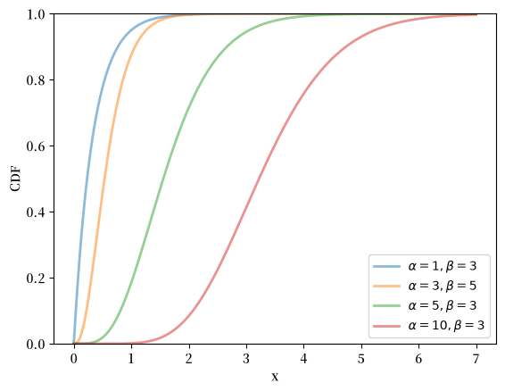
Fig. 18.19 伽马分布的 CDF#